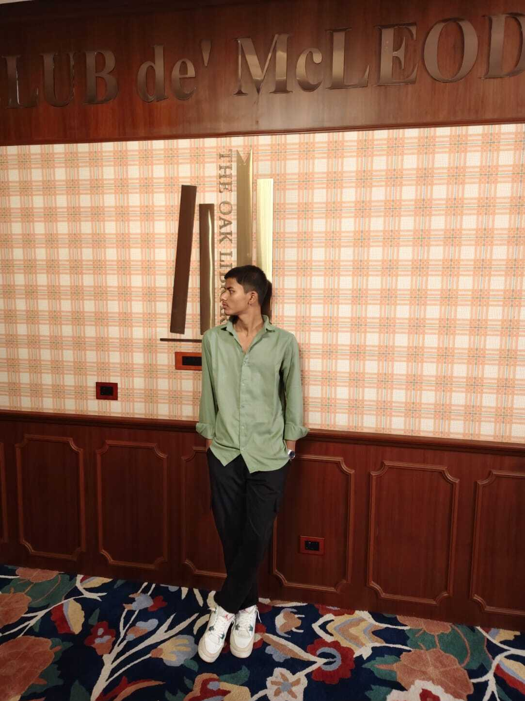

I’m Md Remon Islam, an aspiring software developer with a strong interest in building impactful and scalable digital solutions.Currently a Class 9 student in MLZSJ, I’ve been actively exploring core areas of technology including web development, artificial intelligence, and interactive applications.I focus on learnin by doing—developing real projects such as personal portfolio websites and experimenting with AI-based systems to strengthen both my technical and problem-solving skills. I’m deeply motivated to grow in the field of software engineering and aim to pursue a career with leading tech organizations likeMicrosoft or Google. Beyond coding, I value consistency, adaptability, and continuous learning, which drive me to improve every day. I’m always open to new challenges, collaborations, and opportunities that help me expand my knowledge and create meaningful, user-focused solutions.
